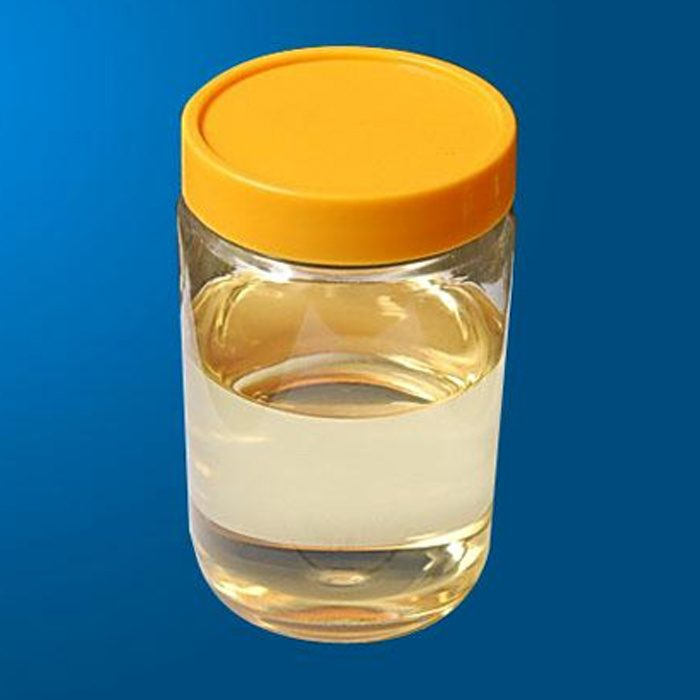
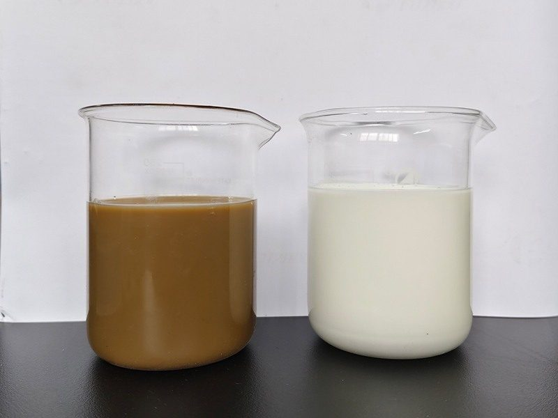
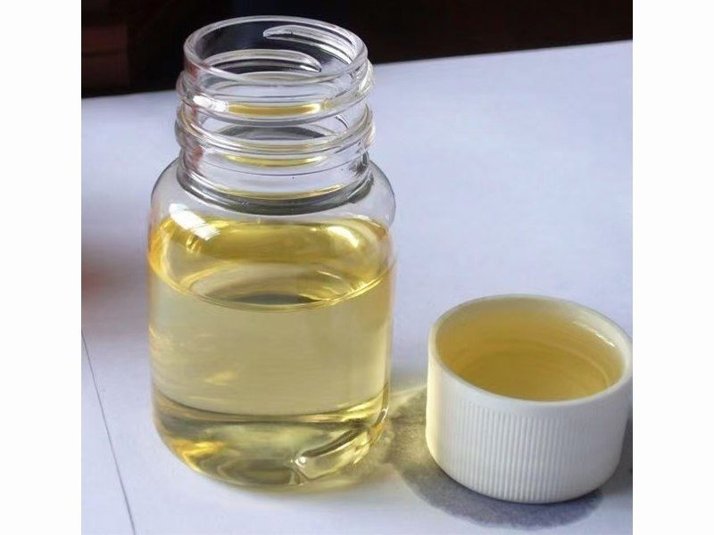
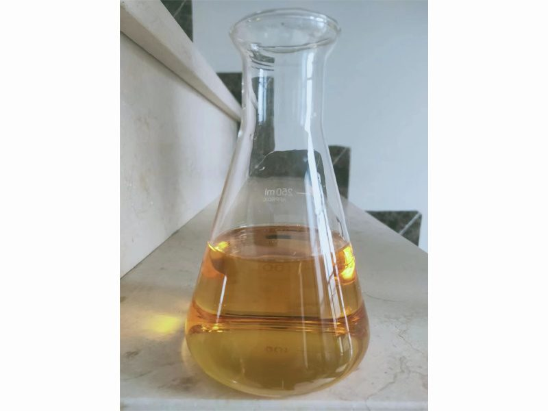

| 型号 | 溶解性 | 备注 | 主要功能 | 应用行业 |
| TC-680A | 水 | 10倍稀释使用 | 清除透平系统的灰尘、油垢、积炭等 | 燃气轮机发电机组的透平系统 |
| TC-680B | 水 | 20倍稀释使用 |

TC-200/TC-260/TC-280/TC-300 系列，用于以含钒重油或原油为燃料的燃气轮机发电机组及燃油锅炉的缓蚀防腐，率先实现国产化替代，产品标准成为中国行业标准。
查看详情 →
TC-350/TC-830/TC-860 系列，用于燃气轮机重质燃油的水洗脱水脱盐处理，也可用于石化厂前端原料油的水洗除盐。
查看详情 →
TC-1703 型，用于高含钙原油或燃料油脱钙，适用于石化厂、燃气轮机发电厂。
查看详情 →
TC-320A 型，用于油田、石化厂、发电厂含油污水的除油处理，中性配方。
查看详情 →我们的技术团队随时为您提供燃油添加剂与油田助剂的专业解决方案